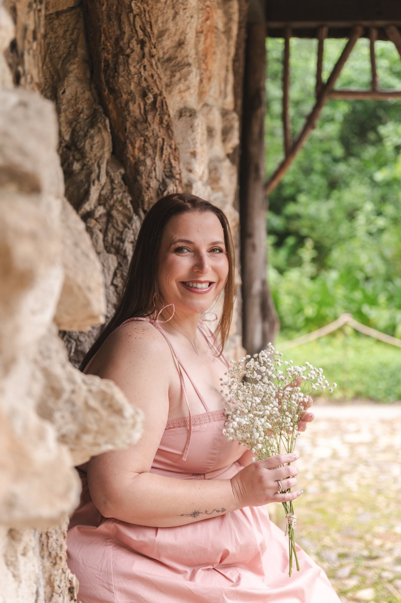
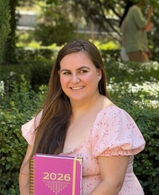
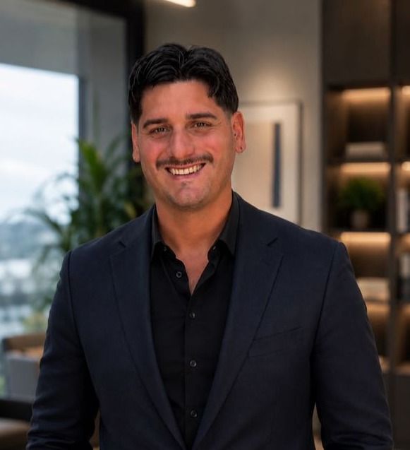

Cuatro días para
volver a ti.
Una villa privada en la Toscana. Doce mujeres. El espacio para parar de verdad, soltar lo que pesa y reconectar con tu esencia.
Reservar mi plaza
El lugar donde decides quién eres a partir de ahora.
La mayoría de retiros te llevan a un sitio bonito y te dan un cuaderno. Mujer Sagrada es distinto: tres días de trabajo real, donde paras de cumplir roles y te miras sin la armadura.
En un entorno que te quita el ruido de golpe, trabajamos en profundidad con el Método ORIGEN — fusionando neurociencia y saberes ancestrales — junto a un equipo profesional que te acompaña en cada paso.
Qué incluye tu plaza
3 noches en villa privada en Toscana (habitaciones compartidas)
Pensión completa a cargo de chef local italiano
Todas las dinámicas, rituales, prácticas y ceremonias
Acompañamiento profesional durante todo el retiro
Traslados internos incluidos (vuelos no incluidos)
Sesión online grupal de integración post-retiro
El equipo que camina contigo

Vanesa Di Benedetto
Directora

Verónica Salamanca
Facilitadora de proceso

Cristhiam Silva
Facilitador de proceso
Señal de reserva: 500€ · Precio más favorable, disponible por tiempo limitado
Reservar mi plaza ahora
Solo 12 plazas.
El momento es ahora.
Si algo en ti se mueve mientras lees esto, confía en eso.
Escríbeme por WhatsApp